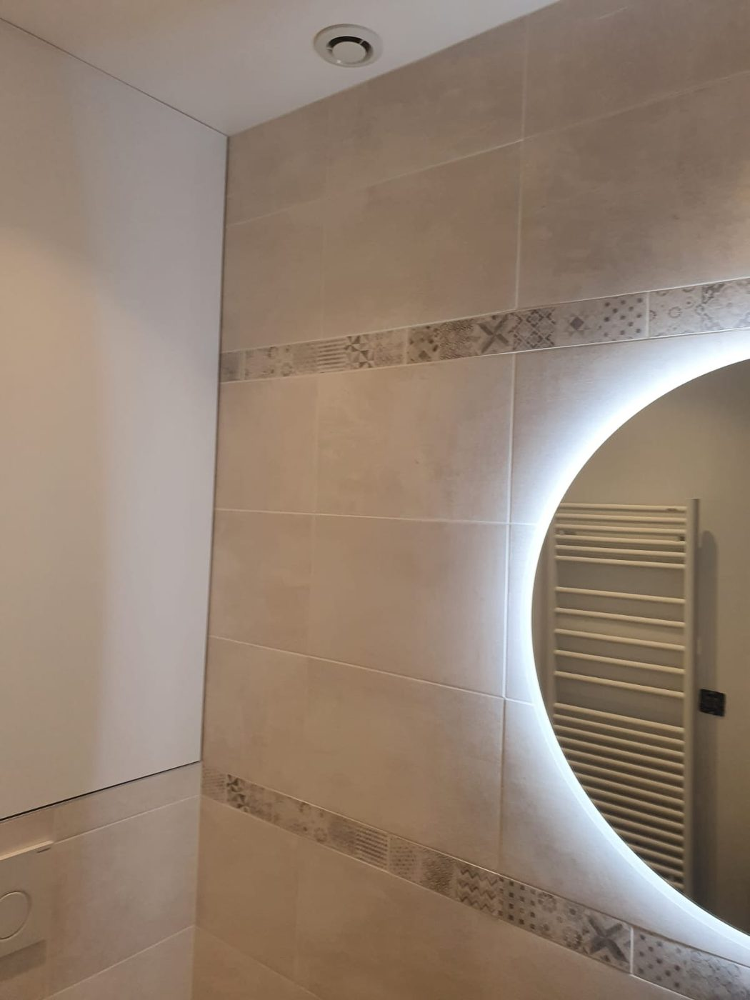

Prestations / Carrelage et faïence
Carrelage et faïence
Sols, murs, grands formats et pièces d'eau, du support à la finition des joints.

Ce que nous réalisons
Sol, mur, pièces d'eau
Du grand format à la mosaïque
- Pose au sol, du format standard au grand format supérieur à 80 cm, en pose droite, décalée ou diagonale.
- Faïence murale de cuisine et de salle de bain, crédences, frises et mosaïques.
- Douches à l'italienne complètes : forme de pente, étanchéité liquide, receveur, caniveau, habillage.
- Ragréage, chape de ravoirage, dépose d'ancien carrelage et évacuation des gravats.
- Joints époxy sur demande, en cuisine et en pièce très sollicitée.


Notre méthode
Étanchéité et support
L'étanchéité n'est pas un supplément
Une douche à l'italienne mal étanchée ne se voit pas la première année. Elle se voit quand le plafond du voisin du dessous se tache, et la reprise coûte alors dix fois le prix du système initial.
Nous appliquons un système d'étanchéité liquide sous carrelage sur l'ensemble des zones d'eau, avec bandes de renfort aux angles et aux pénétrations. La pente est réalisée avant, pas rattrapée à la colle.
Sur le reste, la règle est la même que partout : le support conditionne le résultat. Un sol non ragréé sous du grand format donne des carreaux désaffleurés que rien ne rattrape.
Prix indicatifs
Fourchettes 2026, Île-de-France
Combien ça coûte
| Prestation | Prix HT |
|---|---|
| Pose au sol, format jusqu'à 60 x 60, hors fourniture | 45 à 65 €/m² |
| Grand format ou pose en diagonale, hors fourniture | 65 à 95 €/m² |
| Faïence murale, hors fourniture | 55 à 80 €/m² |
| Douche à l'italienne complète, étanchéité et pente incluses | 1 800 à 3 500 € forfait |
| Ragréage | 18 à 30 €/m² |
| Dépose d'ancien carrelage et évacuation | 25 à 45 €/m² |
Exemple : une salle de bain rénovée hors plomberie et électricité, 4 500 à 9 000 € HT.
Prix indicatifs, hors fourniture lorsque précisé. TVA à 10 % pour les logements achevés depuis plus de deux ans. Chaque chantier fait l'objet d'un devis détaillé après visite technique gratuite.
Questions fréquentes
4 réponses
Questions fréquentes
Faites-vous la plomberie de la salle de bain ?
Non. Nous réalisons la dépose, le support, l'étanchéité, le carrelage et la faïence. Le raccordement des équipements est fait par un plombier, avec qui nous nous coordonnons sur le planning.
Peut-on carreler sur un carrelage existant ?
Techniquement oui, si l'ancien est bien collé et le sol sain. Mais cela ajoute une épaisseur qui pose problème aux portes et aux seuils. Nous le déconseillons dans la plupart des cas.
Combien de temps pour une salle de bain complète ?
Deux à trois semaines en comptant les temps de séchage de l'étanchéité et des joints, et la coordination avec le plombier.
Joint classique ou époxy ?
Le joint ciment convient partout. L'époxy ne se tache pas et se justifie sur une crédence de cuisine ou un sol de douche très sollicité. Il coûte plus cher et se pose plus lentement.
Voir aussi : plâtrerie et cloisons · parquet · peinture
Passer à l'action
Réponse sous 24 h
Parlons de votre projet
Visite technique gratuite, devis détaillé sous 48 heures, dans l'est parisien et à Paris.